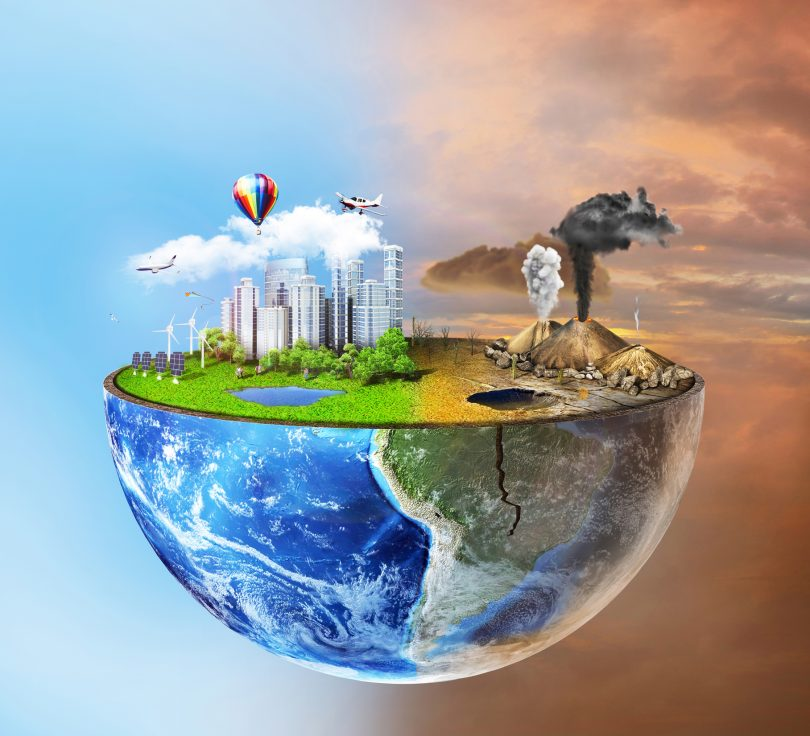

Contaminacion ambiental en mi comunidad
Realmente es un problema grave?
Aqui se muestra una imagen comparativa entre un mundo con contaminacion y uno sin esta, como se puede apreciar es impactante

Aqui se muestra una imagen comparativa entre un mundo con contaminacion y uno sin esta, como se puede apreciar es impactante
Lago contaminado
TIPOS DE CONTAMINACION
La contaminación puede clasificarse según el tipo de fuente de donde proviene, o por la forma de contaminante que emite o medio que contamina. TIPOS: Contaminación atmosférica Contaminación hídrica Contaminación del suelo Contaminación por basura Chatarra electrónica Basura espacial Contaminación radiactiva Contaminación genética Contaminación electromagnética Contaminación térmica Contaminación acústica Contaminación visual Contaminación lumínica